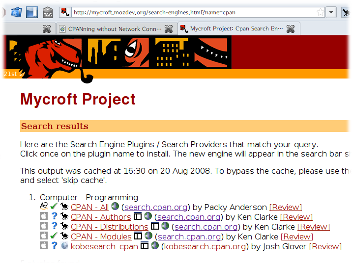
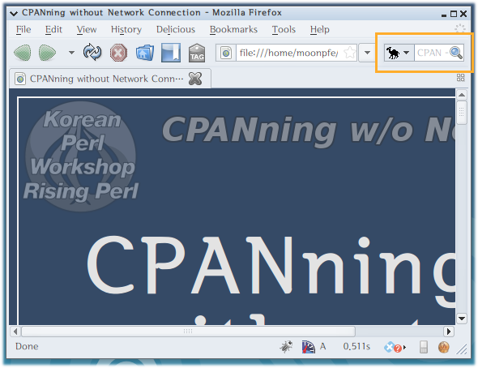

| prev | Page / next | |
문서는 이곳에서도
볼 수 있습니다:
C
P
A
N
Comprehensive
P
A
N
Comprehensive
Perl
A
N
Comprehensive
Perl
Archive
N
Comprehensive
Perl
Archive
Network
종합적인
Perl
Archive
Network
종합적인
펄
Archive
Network
종합적인
펄
자료
Network
종합적인
펄
자료
방
모듈이 많나요?
모듈이 많나요?
모듈이 많나요?
모듈이 많나요?
모듈이 많나요?
모듈이 많나요?
Perl로
Perl로
무언가를 만든다면...
Perl로
무언가를 만든다면...
또는
Perl로
무언가를 만든다면...
또는
만들어야한다면...
손쉬운 CPAN 검색
# # #
손쉬운 CPAN 검색
use OpenSearch; # #
손쉬운 CPAN 검색
use OpenSearch; use OpenSearch::Supporting::Browser; #
손쉬운 CPAN 검색
use OpenSearch; use OpenSearch::Supporting::Browser; use Like::Mozilla::Firefox;
파이어폭스에 CPAN 검색 추가
# 아래 URL을 참고하세요!
- http://mycroft.mozdev.org
- http://mycroft.mozdev.org/
search-engines.html?name=cpan
파이어폭스에 CPAN 검색 추가

파이어폭스에 CPAN 검색 추가

CPAN::Mini
Create a minimal
mirror of CPAN
CPAN::Mini
CPAN::Mini
CPAN::Mini
CPAN::Mini
CPAN::Mini
CPAN::Mini
CPAN::Mini 설치
$ sudo cpan CPAN::Mini
~/.minicpanrc 파일 생성
local: ~/minicpan/ remote: http://ftp.daum.net/CPAN/ also_mirror: indices/ls-lR.gz
minicpan 실행
keedi@uxnote:~$ minicpan mkdir /home/keedi/minicpan/ authors/01mailrc.txt.gz ... updated modules/02packages.details.txt.gz ... updated modules/03modlist.data.gz ... updated ... authors/id/Z/ZU/ZUMMO/Geo-E00-0.05.tar.gz ... updated authors/id/Z/ZU/ZUMMO/CHECKSUMS ... updated mkdir /home/keedi/minicpan/modules keedi@uxnote:~$
용량은 약 880MB
keedi@uxnote:~$ du -hs minicpan/ 887M minicpan/ keedi@uxnote:~$
CPAN의 경로를 변경
$ sudo cpan cpan> o conf urllist urllist 0 [ftp://ftp.daum.net/CPAN/] Type 'o conf' to view all configuration items cpan> o conf urllist unshift file:///home/keedi/minicpan cpan> o conf urllist urllist 0 [file:///home/keedi/minicpan] 1 [ftp://ftp.daum.net/CPAN/] Type 'o conf' to view all configuration items cpan> o conf commit cpan> reload index
이제 네트워크 선을 뽑고
테스트해보세요~
최신 모듈로 갱신하려면?
$ minicpan
구축한 미니 CPAN을
cpan 커맨드 뿐만 아니라
브라우저로 접근하려면?
CPAN::Mini::Webserver
Search and browse
Mini CPAN
CPAN::Mini::Webserver 설치
$ sudo cpan CPAN::Mini::Webserver
*주의*
Moose 기반 모듈
설치 시간이 꽤 걸림
CPAN::Mini::FromList
Create
a minimal CPAN mirror
of modules you specify
미니 CPAN 살빼기
use CPAN::Mini::FromList;
CPAN::Mini::FromList->update_mirror(
list => [qw(
CGI
HTML::TreeBuilder
And::What::You::Want
Etc::Etc
...
)],
);